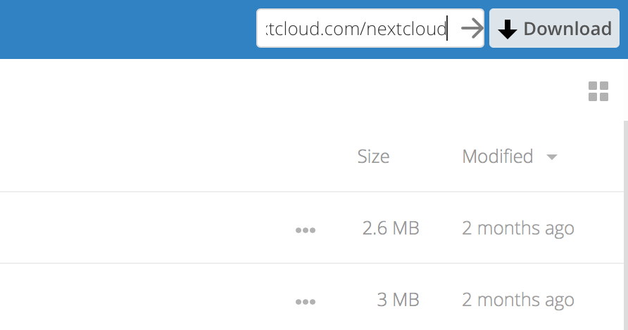

Korzystanie z udostępnień federacyjnych
Udostępnianie federacyjne umożliwia montowanie udostępnionych plików ze zdalnych serwerów Nextcloud, w efekcie tworząc własną chmurę Nextclouds. Możesz tworzyć bezpośrednie łącza udostępniania użytkownikom na innych serwerach Nextcloud.
Tworzenie nowego udostępnienia federacyjnego
Udostępnianie federacyjne jest domyślnie włączone w nowych lub zaktualizowanych instalacjach Nextcloud. Wykonaj następujące kroki, aby utworzyć nowe udostępnienie z innymi serwerami Nextcloud lub ownCloud 9+:
1. Go to your Files page and click the Share icon on the file or directory
you want to share. In the sidebar enter the username and URL of the remote user
in this form: <username>@<oc-server-url>. The form automatically confirms the address
that you type and labels it as „remote”. Click on the label.

2. When your local Nextcloud server makes a successful connection with the remote Nextcloud server you’ll see a confirmation. Your only share option is Can edit.
Kliknij przycisk Udostępnij w dowolnym momencie, aby zobaczyć, komu udostępniłeś plik. W każdej chwili możesz usunąć swój udostępniony link, klikając ikonę kosza. Spowoduje to tylko odłączenie udziału i nie spowoduje usunięcia żadnych plików.
Tworzenie nowego udostępnienia w Chmurze Federacyjnej przez e-mail
Użyj tej metody, gdy udostępniasz pliki użytkownikom na ownCloud 8.x i starszych.
A jeśli nie znasz nazwy użytkownika lub adresu URL? To możesz poprosić Nextcloud o podłączenie i wysłanie go e-mailem do odbiorcy.

Gdy odbiorca otrzyma wiadomość e-mail, będzie musiał wykonać kilka czynności, aby uzupełnić link udostępniania. Najpierw musi otworzyć link, którego wysłałeś, w przeglądarce internetowej, a następnie kliknąć przycisk Dodaj do usługi Nextcloud.

Przycisk Dodaj do Nextcloud zmienia się w pole formularza, a odbiorca musi wprowadzić adres URL swojego serwera Nextcloud lub ownCloud w tym polu i nacisnąć klawisz powrotu lub kliknąć strzałkę.

Następnie zobaczą okno dialogowe z prośbą o potwierdzenie. Wszystko, co muszą zrobić, to kliknąć przycisk Dodaj zdalny udział i gotowe.
W każdej chwili możesz usunąć swój udostępniony link, klikając ikonę kosza. Spowoduje to tylko odłączenie udziału i nie spowoduje usunięcia żadnych plików.